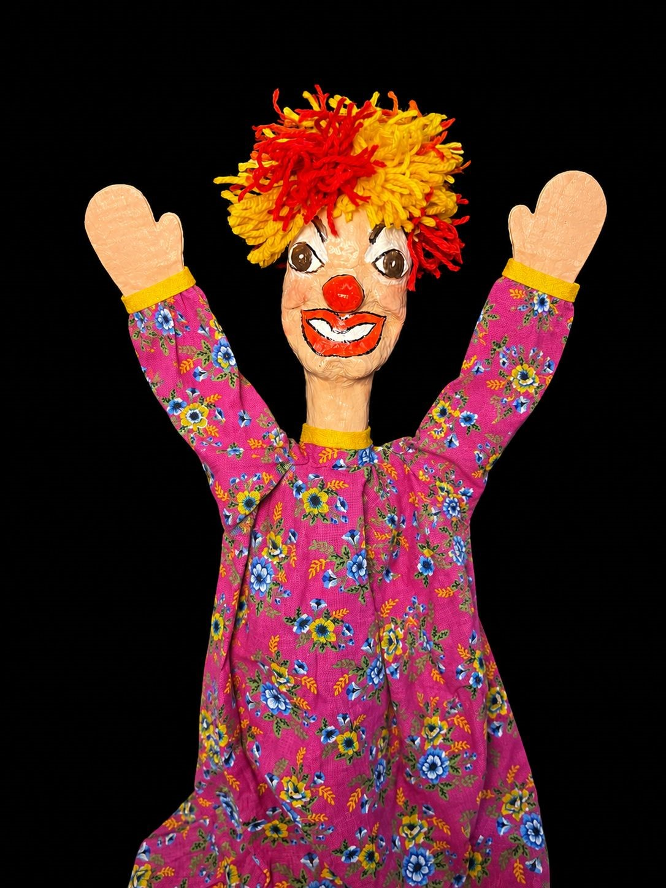
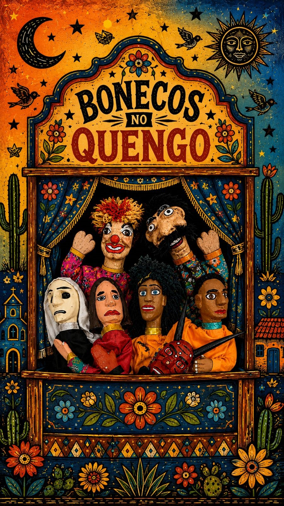
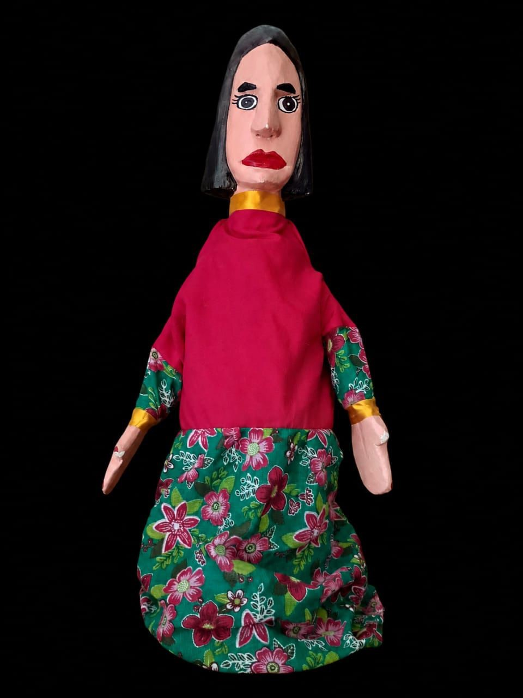
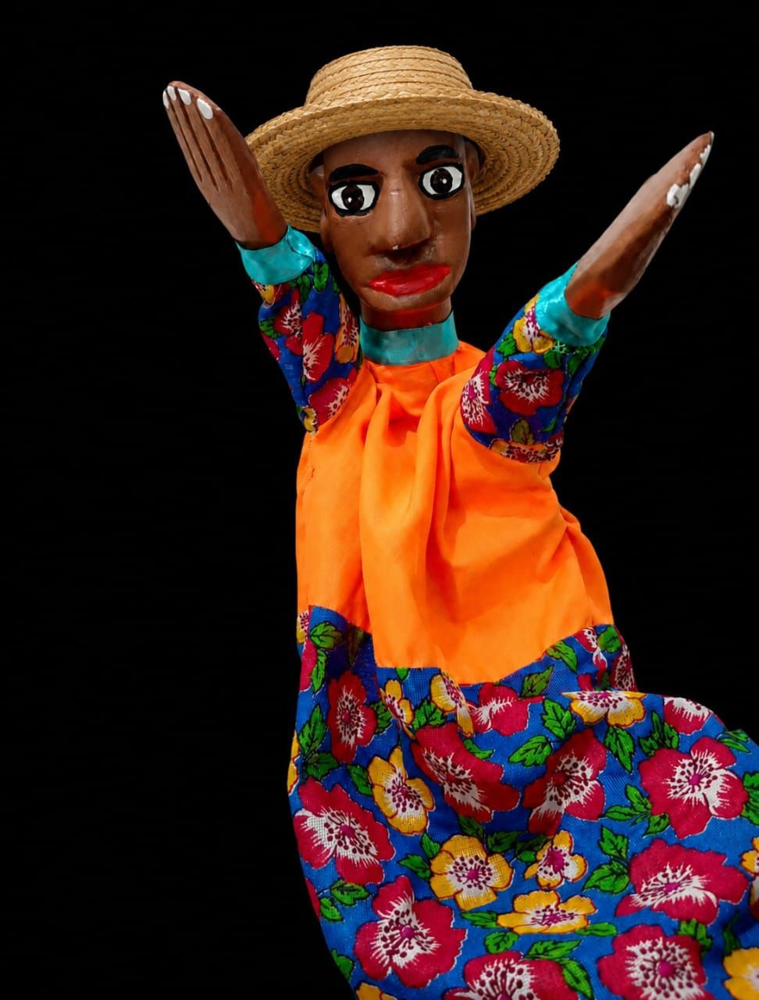
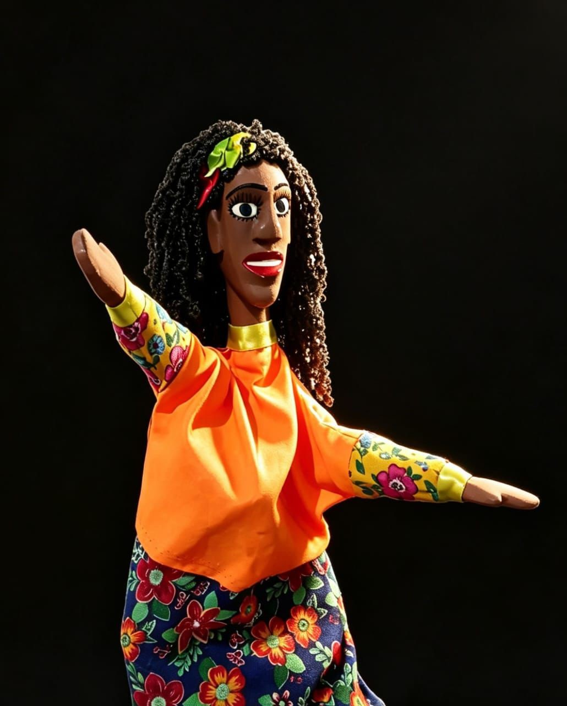

LER HISTÓRIA

Farofa
Palhaço de Lã
A alegria em pessoa! Com sua cabeleira de lã vibrante, Farofa é quem puxa a risada da meninada e a bagunça no terreiro.
Clique para abrir
o teatro de Mamulengo!

Se tem história, tem boneco!
Pernambuco - Brasil

Palhaço de Lã
A alegria em pessoa! Com sua cabeleira de lã vibrante, Farofa é quem puxa a risada da meninada e a bagunça no terreiro.

Barba de Sisal
Olhar profundo e sábio. Esculpido nos causos antigos, sua barba de sisal carrega as histórias e os mistérios do sertão bravio.

Comadre Faladeira
Não guarda segredo de ninguém! Sabe de tudo que acontece na vila e espalha a fofoca mais rápido que o vento no sertão.

Herói Valente
O herói do nosso teatro! Trabalhador, astuto e destemido. Enfrenta o Coronel, a Morte e até o Diabo por sua amada Mariquinha.

Hábito de Cetim
Debochada e arretada, adora prega peça, e arruma confusão onde não tem, ama dançar um forró quando ver o circo pegar fogo.

Vestido de Chita
O coração dela já tem dono: é apaixonada por Benedito. Mas o seu pai, que é político, coronel e brabo, não aceita o namoro de jeito nenhum.

Máscara e Chifres
Ele retrata a luta entre o bem e o mal com temas atuais do cotidiano nordestino.
Conheça as mentes criativas e as mãos talentosas que dão vida ao nosso Teatro.
Peça para nossa "Inteligência Arretada" criar um verso de cordel na hora sobre um dos nossos bonecos ilustres!
Aguardando a inspiração do poeta...
Subtítulo
Criado por:

Diretor / Ator / Bonequeiro
Graduando em Teatro pela UFPE, Bonequeiro, atuando como Manipulador de Bonecos e Ator, com foco em teatro de bonecos e mamulengo.
Experiência em performance, teatro clássico, arte-educador, iluminação teatral e cenografia.

Diretora / Atriz / Bonequeira
Professora de Teatro graduada pela UFPE, atuando como manipuladora de bonecos e atriz, com foco em teatro de bonecos e mamulengo.
Experiência em performances, bonequeira e arte educadora.

Diretora / Atriz / Bonequeira
Atriz apaixonada pelo universo da cultura popular. Tenho uma personalidade instigante, curiosa e criativa, sempre buscando novas formas de expressão através da arte.
Encontro no mamulengo uma maneira especial de levar alegria, reflexão e tradição ao público, valorizando a riqueza da cultura nordestina. Amo a arte, o teatro e tudo que envolve criatividade, emoção e conexão com as pessoas.